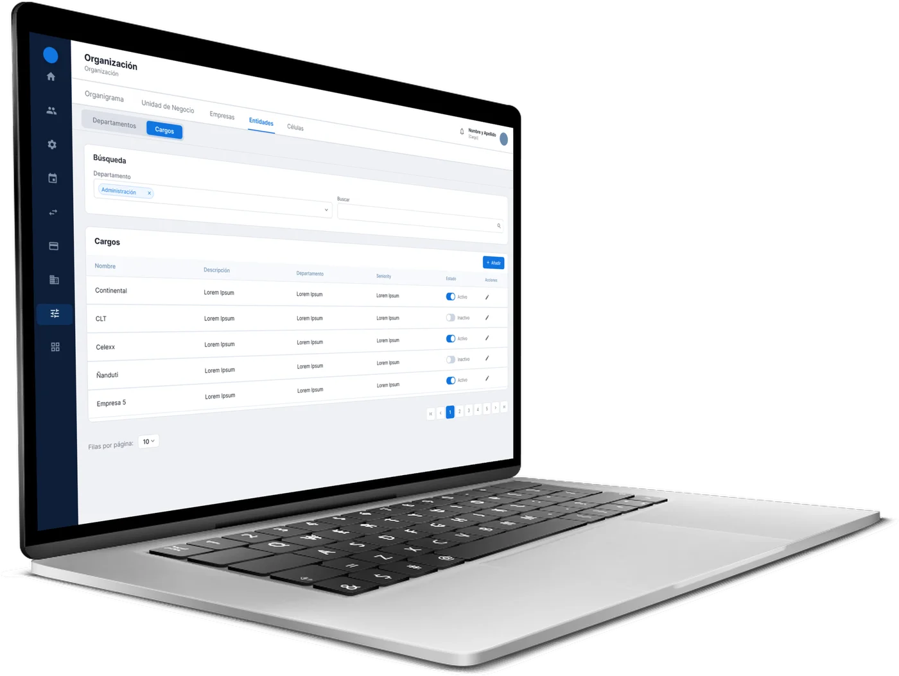
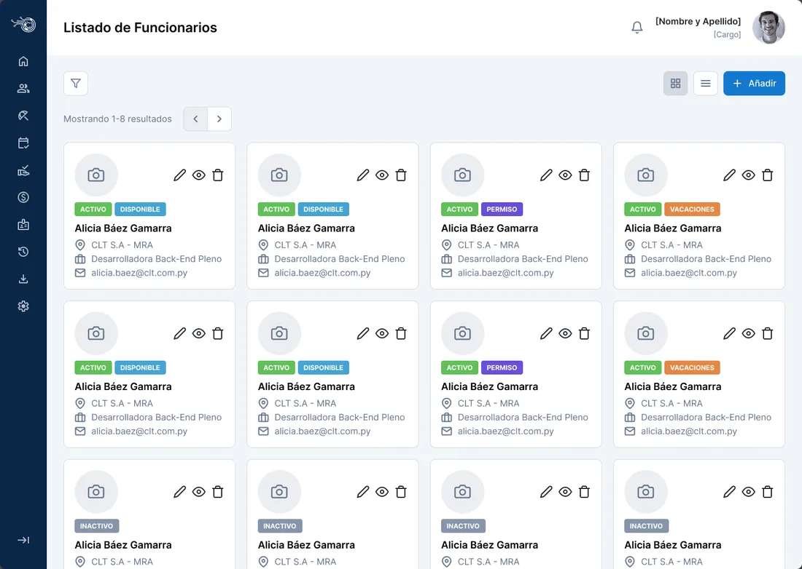
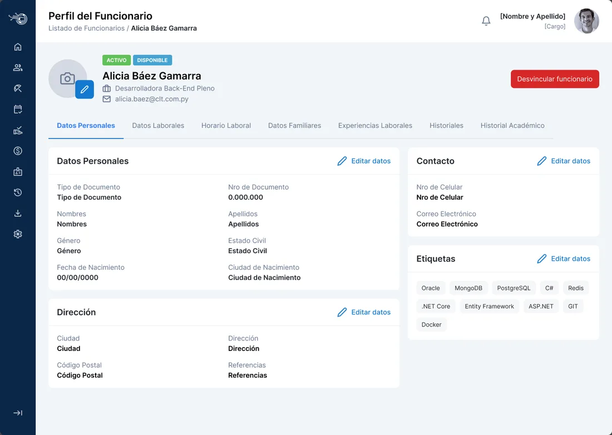
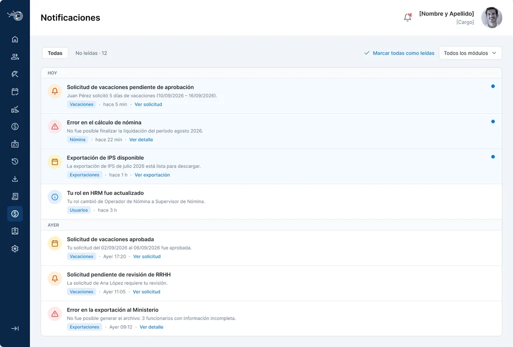

ASTRA
About the project
This is a web-based Human Resources system. It includes a home dashboard, the list of employees with their profiles and the registration of new hires. It also has modules for organization, payroll exports, auditing, notifications and a public portal to request vacation.

Web screens





1 / 5
My contribution
- Functional mapping of HR processes: employees, vacation, leave, payroll and org chart.
- Analysis and design of the Organization, Exports, Notifications and Audit modules.
- Design of the public portal where employees submit their requests.
- Interface redesign (UI 2.0) and creation of the design system, with tokens and components.
- Definition of business rules, states and form validations.
- Built the design manually, with changes and new screens made with Claude.